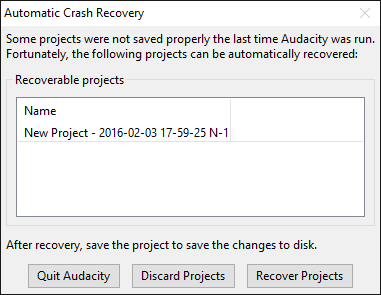

Automatic Crash Recovery
From Audacity Development Manual
In the event of a crash while Audacity has unsaved data (such as a recording that has not yet been saved as a project, or an existing project with unsaved changes), Audacity will attempt to recover that data on next launch from an autosave recovery file.
If there were no unsaved changes at the time of the crash, there will be no recovery dialog - all you need to do is re-open the saved AUP file.
- 
- The project name in the list of recoverable projects includes the date and time of the autosave file, preceded by either the name of the project or by "New Project" for a project that was never saved as an .aup file.
Automatic Crash Recovery
- Exits Audacity without any changes. The Automatic Crash Recovery dialog will reappear next time you launch Audacity.
- Discards the unsaved data for all projects. You will receive a prompt asking if you are sure this is what you want to do. If you confirm that want to discard all projects, they will not be recoverable later.
- Attempts to recover the unsaved data for all projects, and load the recovered waveforms. If there are multiple unsaved projects, each will recover into their own project window. Note that the project history is not recoverable, so you can only recover to the project state at or just before the crash. You also cannot recover the text contents of a label whose text was being added at the time of the crash or where there was no action that triggered autosave after closing the new label.
Note that it is common if there are unsaved changes at the time of the crash for Audacity to warn of "file inconsistencies" when recovering the project. This usually means merely that there are "orphan block files" in the data that were there to enable undo or redo of a project action but which are now superfluous to the recovered project. If this was the case, you would see a note on opening that orphan files would be deleted on saving the project, but no warnings about other kinds of file error.
|